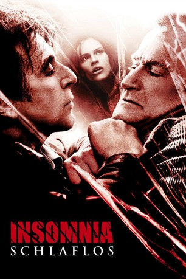

#741 Insomnia - Schlaflos
Alternativ: Insomnia
 
 IMDB-Wertung: 7.2 / 10
IMDB-Wertung: 7.2 / 10  Metascore: 78
Metascore: 78 
Der berühmte Detective Will Dormer aus Los Angeles fliegt mit seinem Partner Hap Eckhart nach Nightmute/Alaska, weil dort ein alter Bekannter, Chief Nyback, in einem undurchsichtigen Mordfall Hilfe braucht. Ganz freiwillig sind Will und Hap allerdings nicht ans Ende der Welt geflogen: Nyback weiß bereits, dass die Polizeiaufsicht von L.A. eine interne Untersuchung gegen die beiden Cops eingeleitet hat…
Jahr: 2002
Dauer: 118 Minuten
FSK: 16
Land: USA Studio: Warner Bros.Tonspuren: DD5.1 - ,
Untertitel:
Auflösung: 1080p (1920x800) Größe: 5580 MB
Genre: Drama, Mystery, Thriller
Regisseur:  Christopher Nolan
Christopher Nolan
Drehbuch: Hillary Seitz, Nikolaj Frobenius, Erik Skjoldbjærg
Soundtrack: David Julyan
Darsteller:
Datei: X:\2002\Insomnia - Schlaflos (2002, FSK16, 1920x800).mkv seit 17.03.2015
Festplatte: HD 1996-2002
 Es gibt insgesamt 93 Filme in der Gruppe '2002'
Es gibt insgesamt 93 Filme in der Gruppe '2002'